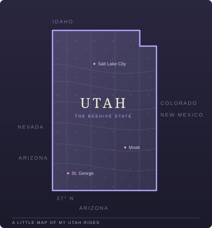

Biking
Mountain biking
in Utah.
Rides, trails, and notes from Utah.
Map
Ride locations

Rides are marked on the map.
Utah rides
Trails and locations.
No rides added yet.
Biking
Rides, trails, and notes from Utah.
Map

Rides are marked on the map.
Utah rides
No rides added yet.